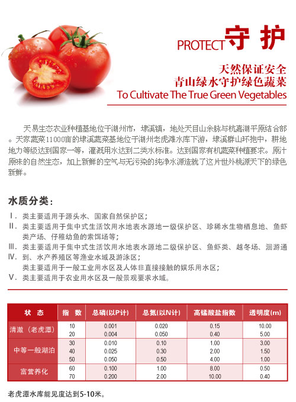
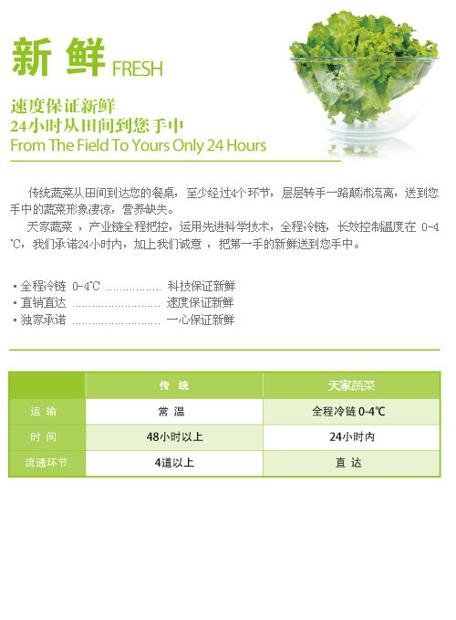

·天家安心宣言
天家為大家所提供的食品，是嚴格選用生産製造食物的人本身也敢食用，並且給自己孩子也吃的「負責任可信賴」的食物。

※2004年4月1日以後,我們修改了農作物栽培合格的標準。
·天家販賣的生鮮食品相關的所有食品材料在栽培期間，根據栽培管理記錄，栽培確認責任者對栽培狀態、安全性、品質全部進行檢查。
嚴格選用生産製造食物的人本身也敢食用，並且給自己的孩子也吃的「負責任可信賴」的食物。所有販售商品都是通過安全基準檢查。Oisix每樣商品都是通過獨家安全基準和第3機關食品品質監察委員會的食品檢查，當您訂單後,我們才去收成農作物 !! 一部分儲藏過後風味更佳的蔬果為例外~

1.天家所嚴選配送的蔬果都是盡量不使用農藥栽培和低濃度農藥的蔬菜水果。
食品中所含有的農藥對人身體會有影響,所以我們Oisix的產品盡量不使用農藥來栽培耕種! 依照氣候、農產品、地區，也有完全不撒農藥栽培而成的農作物,我們堅持不輕易使用農藥。 如果需要的話,也是使用最少量(對人體不會有影響)!!
2.使用有機肥料來孕育土壤,取代化學肥料!!。
天家為了讓您品嘗味道香醇濃厚的蔬菜水果, 孕育田地的土壤是一大關鍵!!
由於要用心栽培土壤, 極力不使用化學肥料,利用有機質肥料和堆肥來提供養分,孕育土壤。
3.有關我們所販售的蔬菜水果全部都詳細的紀錄栽培情況,簡單管理且公佈公開讓大家也能清楚了解。
我們只販售負責任的蔬果農家!有詳細管理的栽培紀錄表,也能提供顧客們簡單明瞭的資訊!
還有,農家們也保證製作「能夠放心地讓自己的孩子食用的食品材料」(和我們天家共同理念)。
嚴格選用生産製造食物的人本身也敢食用，並且給自己的孩子也吃的「負責任可信賴」的食物。所有販售商品都是通過安全基準檢查。Oisix每樣商品都是通過獨家安全基準和第3機關食品品質監察委員會的食品檢查，當您訂單後,我們才去收成農作物 !! 一部分儲藏過後風味更佳的蔬果為例外~